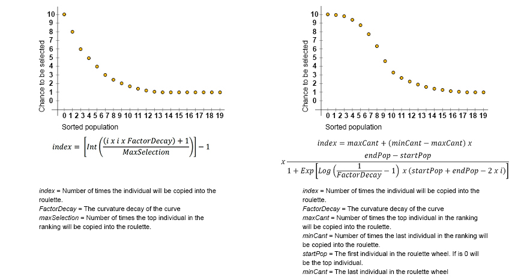
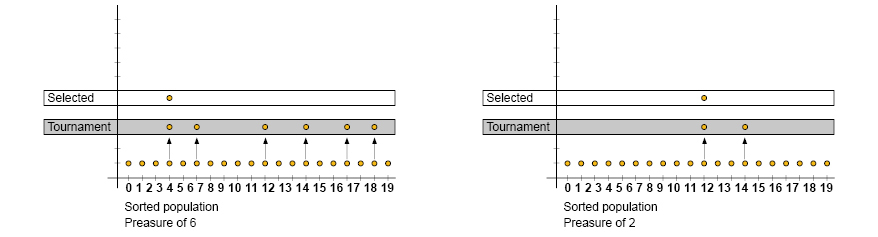

Natural Selection
There are many ways to select individuals in a population. Some methods are exclusive, which means will pick the highest 10 fitness, but other methods can be combined with selection strategies. The natural selection algorithm is the operator who decide which individuals continue with the breeding process in the next step. The possibility to be selected is related with the fitness of the chromosome, although some consideration in the design must be taken in order to avoid a fast convergence. That's why, select the most fit individuals and reject the rest is not a good strategy, because the population becomes flat (homogeneous) and therefore the space space search is not explored properly.
There are many natural selection algorithms, but all of them are based in the fitness evaluation. A good strategy should give more chances for an individual with higher fitness value, but also allows to pick some with lower values too. Find the right balance is magic, but the objective is to avoid the fast and lower convergence. The higher fitness gene individuals will spread faster in the population, but an individual with lower fitness values could helps to find better solutions in the space search.
Usually, natural selection algorithms are specific to the problem to solve. Some algorithms look for performance, meanwhile others, looks for precision. Natural selection determine the search strategy in the GA and it is a key piece in this puzzle. For example, if we choose a high pressure in the selection method, the individuals selected for the crossover step will show very similar characteristics which means they will be close in the space search. In the other hand, if the pressure selected is very low, the individuals selected will be disperse in the space search, creating many open roads to explore, higher generalization.
Elitism Selection
This technique select the highest ranked individuals in the population. Although most GAs do not use this strategy, they implement a modified elitism selection algorithm. This technique, might not be useful in some cases because produce an early convergence in the population.
Only the first 5 individuals ranked in the population are selected 10 times each. Since all of them has similar fitness, The selected individuals shows similar characteristics, which mean the GA will focus to search in a small area of the space search.
Roulette Wheel
This is the most common technique to select individuals in genetic algorithms. The individuals selection is proportional to their fitness. Each individual in the population has a chance to be selected for the next generation. The individuals in the top of the ranking (higher fitness) have more chance of being selected than the other with less fitness value, nevertheless all individuals have a chance of being selected.
Each individual in the population is assigned to a segment in the roulette, which is proportional to their fitness. This mean the sum of all percents is equal to the whole value of the roulette. The individuals with higher fitness will have a bigger percent in the roulette. Usually the top individuals are in the beginning of the roulette an so on to complete the list. To make the selection, a random number between 0 and the size of the roulette is generated. Although this method is simple, it is not so useful when you deal with large populations.
Is possible make modification of the traditional roulette wheel. The size of the roulette, the size of the population is not a fixed value, and some times is necessary re-define how many times the first individual in the ranking is going to be selected. Doing this is possible to increase the computational efficiency and manage the selection of the individuals with small fitness. This flavor of roulette wheel can be represented by the non polynomial curve y = 1/x.
Roulette Wheel Selection In the image above the chromosome 1 has a fitness 100 and has a proportional area to it fitness into the roulette wheel. The chromosome 4, in the other hand, has a fitness 5. It is at the end of the roulette wheel and their selection probabilities are very small. Nevertheless it has some probabilities to be selected for crossover, as occur in the real life.
 Roulette Wheel Selection variations In the image above there are two variations of a roulette wheel. Modifying the parameters of the functions is possible to control the size of the roulette, the selection of the individuals and the difference among them.
Tournament Selection
This technique, use a parameter called pressure, which determine how many individuals will compete in a tournament, based on the highest fitness ranking. The minimum tournament size is 2. This means only two individuals will compare their fitness and there is a high chance that a lower ranked individual is selected. In the other hand, 10 individuals (high pressure) in a tournament, give a small chance to lower ranked individuals of being selected. The pressure value can be adjusted progressively a long the generations to find the right balance. this method is called Climbing Selection algorithm.
During the initial generations the pressure can be low to allow the individuals search randomly in the space search. In the latest generations, the pressure can be high to allow the highest ranked individuals search in detail the most promised area in the space search.
There are basically 2 types of Tournament selection.  The image above is a clear example of 2 tournaments with different pressure parameter values.
Tournament Selection Deterministic
this technique is called deterministic because is based in the highest and lowest ranked individuals. This method has the advantage to control elitism and also the pressure. And is very useful when is necessary to avoid the premature convergence.
Tournament Selection Probabilistic
This version generates a random number between 0 and 1. If the random number is bigger than some threshold, the algorithm select the top ranked individual. Else the algorithm select the other individual.
Hierarchical Tournament Selection
Same individuals have many tournaments per each generation. The selection becomes more precisely and reduce the GA calculus time.
Climbing Selection
This technique increase the selection threshold during the GA execution. So the fitness function becomes more discriminatory. This technique is useful when all individuals have similar characteristics and is useful for small populations.
Range Selection
Each individual has a fitness range number which determine the possibility of being selected..The advantage is to avoid the top ranked individuals get domain over the others, therefore the algorithm preserve the diversity into the population. This method is useful in very noisy search spaces.
Generation Selection
Per each generation the algorithm select different individuals until the old population is completely replaced.
Steady State Selection
The algorithm save individuals trough generations that have to pass many tournament selections. This technique allow to save and replace the individuals in future generations and is similar to the real world. This type of selection is useful for big populations.